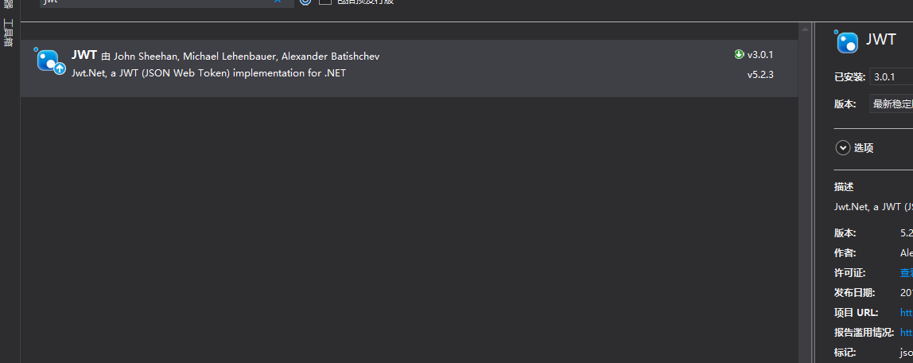
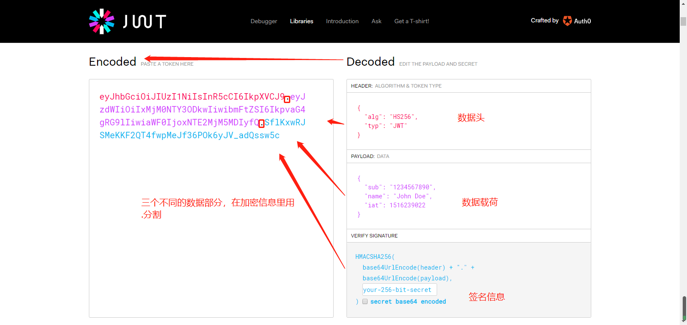
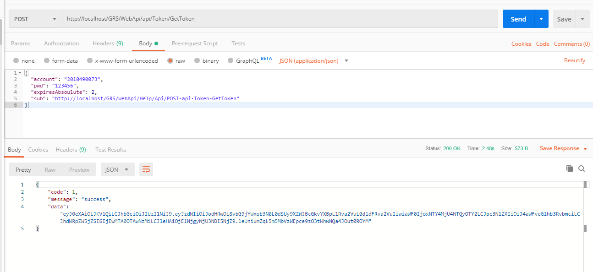
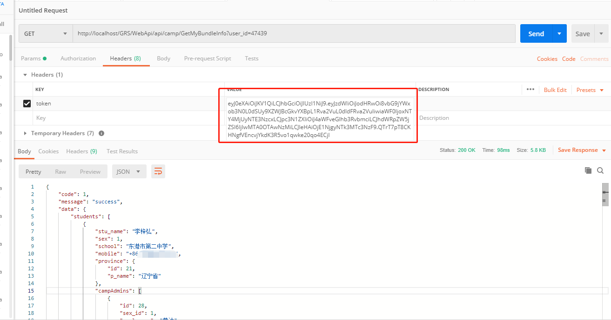
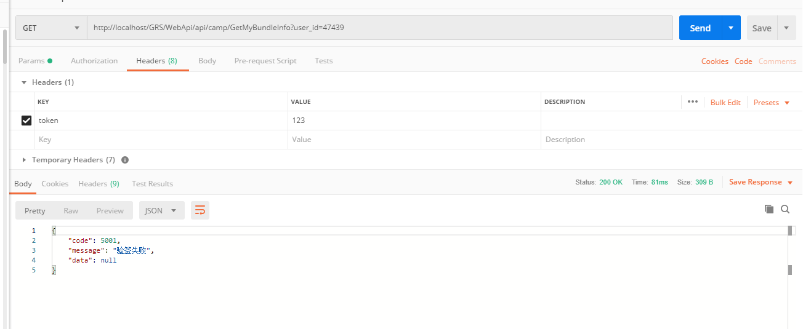

终于聊回正事儿了，哈哈，今天聊聊jwt，概念性的东西，我还是不多说了，每个人肯定都有自己的认识，大家想深入了解的，自己去Google，去百度吧~
咱们就直接看东西了
先说一下jwt的官网：https://jwt.io/，集成开发的时候也是要到这里下载一下jwt的开发包，如果是.net 的话，建议直接用nuget包来管理；

所谓jwt就是json web token的简称，所以，几乎支持市面上的所有开发语言，.net ，当然不在话下了，对了虽然说不聊概念，但我还是想说一下为什么要用jwt，还记得我上篇举得那个喇叭裤的例子吗，jwt在接口安全性认证的层面，就是个宠儿和新贵的待遇，各大公司各大行业都纷纷追捧，所以为了让你的系统，或者是让你的知识能跟的上潮流，请选择jwt~
具体的优缺点就不提了，还是需要大家自行去百度，
来吧，看东西
之前我为两个小程序开发了后台接口，接口的安全性认证就是用的jwt，其实也是第一次接触，使用起来也不是很熟练，但配置完成后，会方便很多，许多访问安全上的问题，你在写接口的时候就不用再考虑了；
首先，根据jwt的数据结构，我简单截了个图

简单来说就是，jwt通过特有的算法，将特定结构的数据，转换成一串字符串，那么这个特定的数据结构，包含header，payload，signature三个部分，如果我们的系统只是通过jwt来做安全性验证，那我们不用去研究这三个部分具体的作用，明白他的结构就可以了，但当你用了一段时间之后，会发现，本身jwt就是可以传输数据的，我们可以再payload的部分定义自己需要传输的数据格式，以此来完成数据的传输，需要注意的是，要放在payload里的数据一定不能是重要的身份信息等关键数据，要保证安全性；
看一下代码
1 | public Response GetToken([FromBody] AuthModel authModel) |
看到这段代码模型验证的账号和密码我现在是写死的，正常来说这个信息是存储起来的，这个信息是你要颁发给客户端的，作为验证请求合法性的依据，那么，访问者要保存好这个凭据信息，并将请求的凭据信息放在后端，尽量不要通过前端js直接访问，如果是前后端分离的项目，则可以用node做一个中间件，如果实在无法避免直接请求，则至少需要保证请求协议为https，以保证传输过程的数据安全，并定期更换凭据；
生成jwt的秘钥要保存在数据中心的服务端，需要做好保存，如有发现凭据泄露风险，及时更换；
看一下访问效果；

这样我们就获取到了请求数据接口的凭证，在请求接口的时候，需要将该凭证放到header或者url里也可以，我习惯放到header，
说到这，再聊一下以前传统的身份验证方式，以前我们是通过session来存储用户的登录信息，用户登录通过后，会返回sessionid到客户端，客户端会把这个sessionid存到cookie里，然后之后的每次请求都会带着这个id过来，从而完成身份验证，相信大家如果自己百度过jwt的优缺点相关内容的话，肯定会看到相关的介绍，我就在简单提一下，有了jwt这种机制以后，服务端的数据中心会是一种无状态的状态（表达有限），我再举个例子吧，就好比我们过安检，那种session，cookie的方式，就像是，你该过安检了，一进站，发现里面一堆安检的点，每个安检的门上都贴着个名字，比如张三，在A点安检，李四，在B点安检…，找了一圈没你的名字说明你账号输入有误，就是人和安检的地点得是一一对应的，这样问题是，站点就那么大点地方，一下子过安检的人多了，就承载不过来了，那么jwt这种方式呢，不用对应了，有一个统一的安检口，来安检的人呢，先把票拿出来验票，是这的票就可以进，不是就不能进，一下子站台的好的资源就释放出来了。我理解大概就是这个样子~~
前面我们写了怎么出票，接下来聊一下验票，
首先在后台接口要有一个统一的网关，或者过滤器，验证请求的合法性，看下代码
1 | private Response ValidateToken(string encryptToken) |
然后我们重载接口请求的入口方法
1 | protected override void Initialize(HttpControllerContext controllerContext) |
这样就基本完成了接口的安全性校验，再来看一下请求效果

如果去掉签名，或者签名错误，则会无法获取数据

至此，jwt的集成就基本完成了，后续如果有更深层次的需求，我们可以在进一步的优化和升级
这篇就到这了